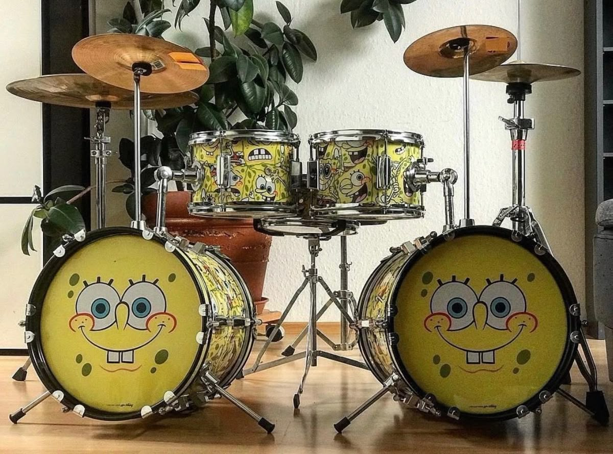

Coordinación, dinámica y percusión en el escenario.
Estructura del Set de Percusión
La batería es un conjunto de instrumentos de percusión agrupados para ser tocados por un solo músico utilizando baquetas y pedales.
Su función principal es establecer el tempo (medido en BPM o pulsos por minuto) y marcar la dinámica de cada sección de una canción (verso, pre-coro y estribillo).

Figura 4: Batería acústica estándar de 5 cuerpos con set de platillos de bronce.
Elementos que Conforman la Batería
Tambores (Membranófonos)
Bombo (Bass Drum): El tambor de mayor diámetro, accionado con el pie derecho mediante un pedal. Se sincroniza directamente con las notas fundamentales del bajo eléctrico.
Caja o Redoblante (Snare Drum): Posee una bordona de alambres metálicos en su parche inferior que le otorga su sonido seco y vibrante en los tiempos fuertes (generalmente tiempos 2 y 4 en un compás de 4/4).
Toms (Aéreos y de Piso): Tambores cilíndricos afinados en distintas alturas tonales, utilizados para realizar redobles o fills de transición.
Platillos (Idiófonos)
Hi-Hat (Charles): Dos platillos montados en un soporte con pedal para el pie izquierdo, esenciales para mantener el pulso constante.
Crash: Platillo de acento utilizado para enfatizar cambios de sección o inicios de compás.
Ride: Platillo pesado de gran diámetro que ofrece un sonido definido y sostenido como alternativa al Hi-Hat.
Demostración Multimedia: Solo de Batería (Greyson Nekrutman)
A continuación, se presenta una interpretación de alta velocidad y precisión rítmica en la batería acústica: